1004E60 COMPONENTS TRANSFER for lighter engine
- Path
- Procedures > 10 ENGINE UNIT > 1004 ENGINE AND POWER UNIT > 1004E engine assembly inspection and repairs > 1004E60 COMPONENTS TRANSFER for lighter engine
- Kind
- repair procedure (removal / refitting; the operation number is the code)
- Applies to
- engines: 1.6 16v; all production periods
- Interactive page
- https://sloeber94.github.io/elrnDB-fMltpl/en/#/2892334
Applies to: engines: 1.6 16v; all production periods
 Removing
Removing
 Refitting
Refitting1004D40 engine - position on stand and remove
1004E30 COMPONENTS TRANSFER for half-finished engine
1. Loosen the nut fixing the automatic belt tensioner.
2. Remove the timing drive belt.
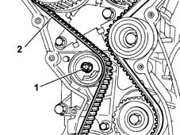
Applies to: engines: 1.6 16v; all production periods
1. Using locking tools (1a) and (1b), undo the bolts (1b) fixing the pullies.
2. Remove the inlet and exhaust camshaft drive pullies.
 | Name | Country |
|---|---|---|
1a | Support for counter-torque | 1.860.831.000 |
| Name | Country |
|---|---|---|
1b | Adaptor | 1.860.885.000 |
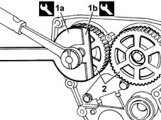
Applies to: engines: 1.6 16v; all production periods
1. Unscrew the retaining bolt.
2. Remove the fixed timing belt tensioner.
3. Undo the bolts (3a) and remove the timing belt rear protection (3b).
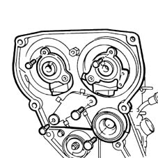
Applies to: engines: 1.6 16v; all production periods
1. Undo the fixing nuts (1a) and remove the mounting brakcet (1b) for the ignition coils.
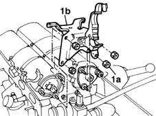
Applies to: engines: 1.6 16v; all production periods
1. Undo the bolts.
2. Remove the inlet and exhaust side camshaft housings.
Recover the gasket underneath.
Disconnect the coolant hose to the water pump rigid pipe.
3. Using a suitable spanner, undo the bolts fixing the cylinder head to the cylinder block/crankcase.
4. Remove the cylinder head.
5. Recover the cylinder head gasket.
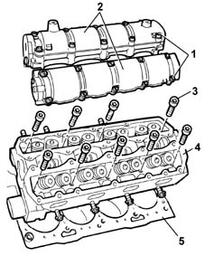
Applies to: engines: 1.6 16v; all production periods
Refitting
RemovingRemove the half complete engine to be replaced from the overhauling stand.
Remove the engine mounting brackets and transfer them to the new half complete engine.
Using a suitable tool, lift the engine and fix it to the rotating stand to fit the missing components.
Position the piston for cylinder no. 1 approximately at T.D.C.
Clean the cylinder head and crankcase contact surfaces.
Position the cylinder head gasket with the wording "ALTO" [TOP] facing you.
Before fitting the cylinder head, rotate the crankshaft so that the piston for cylinder no. 1 is approximately at T.D.C.
Position the cylinder head on the crankcase.
1. Tighten the cylinder head bolts, following the order shown in the figure below.
2. Using the tool, tighten the cylinder head fixing bolts to torque, following the order illustrated previously.
| Name | Country |
|---|---|---|
2 | Protractor | 1.895.897.000 |
 | Fastening | Component | Ø | Value (daNm) |
|---|---|---|---|---|
- | Bolt | CYLINDER HEAD | M10 x 1.25 | 4 + 90° + 90° |
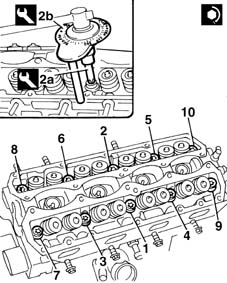
Applies to: engines: 1.6 16v; all production periods
Fit a new cylinder head extension gasket.
Fit the camshaft housing, taking care not to let the hydraulic tappets drop.
Tighten the cylinder head extension bolts to torque.
| Fastening | Component | Ø | Value (daNm) |
|---|---|---|---|---|
- | Bolt | CYLINDER HEAD EXTENSION GASKET | M6 | (exhaust side) 1,5 |
Position the new gasket on the inlet side camshaft housing.
Fit the camshaft housing, taking care not to let the hydraulic tappets drop.
Tighten the cylinder head extension bolts to torque.
| Fastening | Component | Ø | Value (daNm) |
|---|---|---|---|---|
- | Bolt | CYLINDER HEAD EXTENSION GASKET | M6 | (inlet side) 1,5 |
Fit the timing belt rear protection.
Fit the timing belt fixed tensioner tightening the fixing bolt to torque.
| Fastening | Component | Ø | Value (daNm) |
|---|---|---|---|---|
- | Bolt | FIXED TENSIONER | M12 x 1.25 | 8.7 |
Fit the camshaft pullies, without tightening the fixing bolts.
Remove the camshaft rear covers from the camshaft housing.
1. Position camshaft timing adjustment tools.
2. When fitting the tools, align shaft seat (2a) with key (2b) on the tools.
3. Tighten the tool retaining nuts.
| Name | Country |
|---|---|---|
1 | Template | 1.860.874.000 |
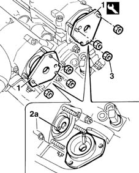
Applies to: engines: 1.6 16v; all production periods
Remove the spark plugs from their sockets on the cylinder head.
1. Position a dial gauge (1a), supported by the pointer (1b) in the housing for the spark plug for cylinder no. 1. Turn the crankshaft with small, even movements until the dial gauge shows the cylinder no. 1 piston is at TDC.
| Name | Country |
|---|---|---|
1b | Probe mount | 1.860.895.000 |
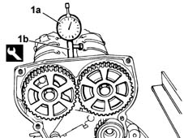
Applies to: engines: 1.6 16v; all production periods
1. Proceed with fitting the timing drive belt, fitting initially on the crankshaft gear (1a), the oil pump gear (1b), the fixed pulley (1c), the inlet timing pulley (1d), the exhaust pulley (1e) and lastly on the automatic tensioner (1f).
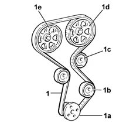
Applies to: engines: 1.6 16v; all production periods
1. Unscrew the retaining bolt.
2. Position the toothed belt tensioning tool.
| Name | Country |
|---|---|---|
2 | Belt tensioner | 1.860.876.000 |
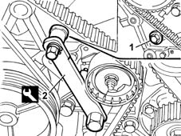
Applies to: engines: 1.6 16v; all production periods
1. Adjust the tool until the belt is as taut as possible, i.e. when the moving belt tensioner pointer is at the end of its travel.
2. Tighten the tensioner retaining nut.
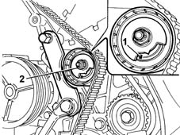
Applies to: engines: 1.6 16v; all production periods
Use the pulley tightening tool to tighten the camshaft pulley retaining bolts to the specified torque.
| Fastening | Component | Ø | Value (daNm) |
|---|---|---|---|---|
- | Bolt | TIMING GEAR DRIVEN PULLEYS | M12 | 12 |
| Name | Country |
|---|---|---|
- | Counter-torque | 1.870.716.000 |
Remove the camshaft timing tools.
| Name | Country |
|---|---|---|
- | Template | 1.860.874.000 |
Remove the dial gauge together with the probe.
| Name | Country |
|---|---|---|
- | Probe mount | 1.860.895.000 |
Rotate the crankshaft through two revolutions in its normal direction of rotation.
1. Loosen the belt tensioner retaining nut and use tool (1a) to slightly release belt tension until moving reference (1b) is aligned with fixed reference (1c) on the tensioning device.
2. Tighten the tensioning device retaining nut to the specified torque.
| Name | Country |
|---|---|---|
1a | Belt tensioner | 1.860.876.000 |
| Fastening | Component | Ø | Value (daNm) |
|---|---|---|---|---|
2 | Bolt | MOBILE TIMING TENSIONER | M6 | 2.5 |
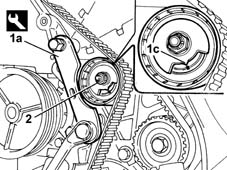
Applies to: engines: 1.6 16v; all production periods
Remove the tool and tighten the retaining bolt removed previously to the specified torque in order to fit the tensioning tool.
Fit the camshaft rear covers.